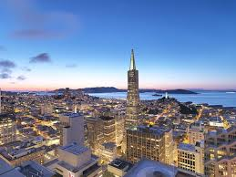
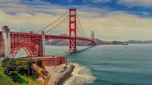
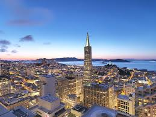
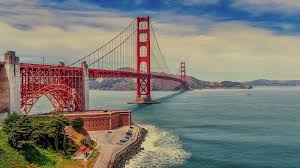

San Francisco, is the cultural, commercial, and financial center of Northern California. The consolidated city-county covers an area of about 47.9 square miles at the north end of the San Francisco Peninsula in the San Francisco Bay Area. It is the fourth-most populous city in California, and the 13th-most populous in the United States, with a 2016 census-estimated population of 870,887. The population is projected to reach 1 million by 2033. A popular tourist destination, San Francisco is known for its cool summers, fog, steep rolling hills, eclectic mix of architecture, and landmarks, including the Golden Gate Bridge, cable cars, the former Alcatraz Federal Penitentiary, Fisherman's Wharf, and its Chinatown district.
 


